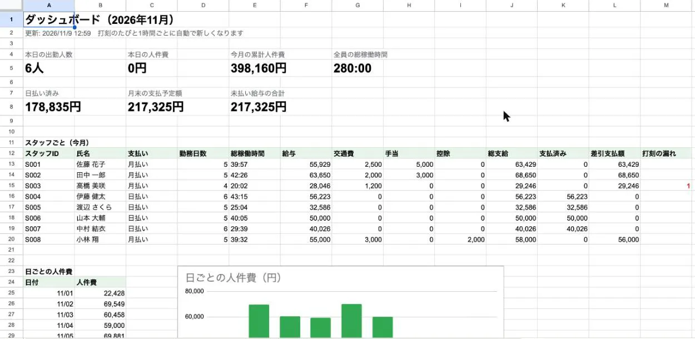
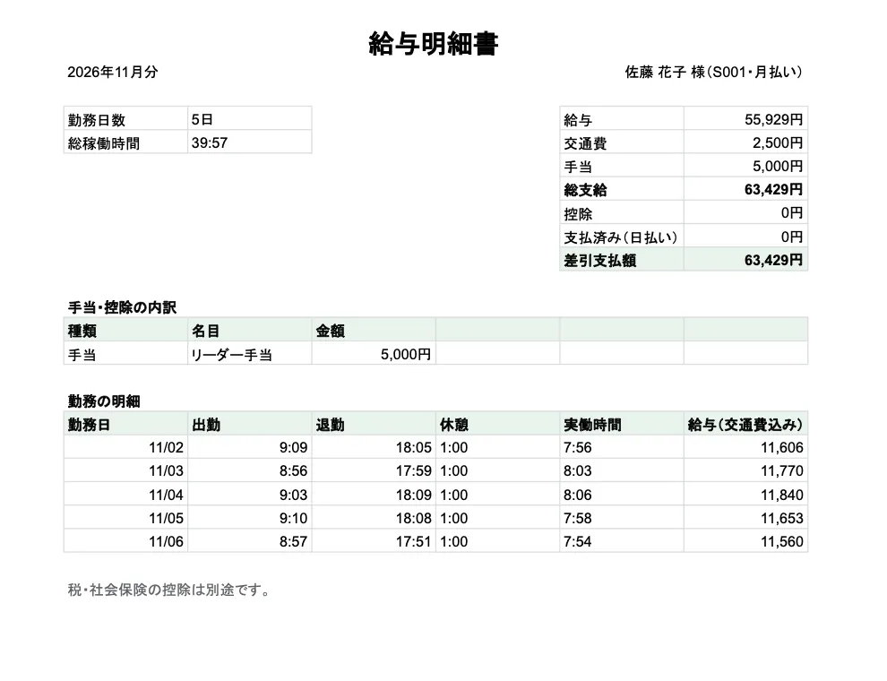

スマホで打刻するだけで、給与計算と明細までできあがる
単発のスタッフも含む月50名ほどの勤怠と給与を、Googleフォームとスプレッドシートで回す仕組みの試作です。実際にあった募集の6つの機能をすべて作り、仮のスタッフ8人・1か月分のデータで動かしています。
募集で挙がっていたこと
- 毎回ちがう単発のスタッフが来るので、入力をできるだけ簡単にしたい
- 日払い・月払い、時給・日給が混ざり、給与の計算が複雑
- 誰が何時間働き、いくら発生しているかを、開くだけで分かるようにしたい
- 月末に勤怠表と給与明細が自動でできている状態にしたい
業務の流れがどう変わるか
いま
- 紙やメモで出勤を集める
- 時給・日払いを見ながら手で計算
- 明細を1人ずつ作る
毎月の手作業
これから
- スマホのフォームで打刻
- 勤怠・給与・人件費が自動で出る
- メニューから明細PDFを全員分
確認するだけ
担当した内容をもとにした、業務のイメージです。実際の画面ではありません。
作ったもの
- 打刻フォーム: 1ページ・3問（氏名・打刻種別・備考）。出勤／休憩入／休憩戻／退勤を選んで送るだけで、休憩時間も自動で数える
- 給与の自動計算: 時給は日払い1,300円・月払い1,400円、特別時給があれば優先。日給・交通費・手当・控除・日払い済みから差引支払額まで
- ダッシュボード: 本日の出勤人数と人件費、今月の累計、月末の支払予定額、未払いの合計、日ごとの人件費のグラフ
- 月の締め: 月ごとの一覧表を残し、過去の月もそのまま見返せる。打刻の漏れは赤で知らせる
- 給与明細・勤怠表: 1人1枚の A4 の PDF をメニューからまとめて作る
- 振込口座は管理者だけが見られる別のシートに分けて保護（試作では中身は入れていない）
打刻フォームを試す
打刻
打刻しました（見本なので、どこにも送られていません）。
見本のフォーム
本物の打刻フォームと同じ3問です。名前と種別を選んで「送信」を押すと、スプレッドシートの「打刻」シートに入る行が右に出ます。見本なので、送信してもどこにも送られません。
| タイムスタンプ | 氏名 | 打刻種別 | 備考 |
|---|---|---|---|
| 2026/11/09 8:58 | 佐藤 花子（S001） | 出勤 |
本物では、この行をもとに勤怠・給与・ダッシュボードが自動で計算し直されます。
画面


ファイル
XLSX勤怠・給与（試作）のスプレッドシート
Excel・約1.3MB・Google ドライブで開きます（そこからダウンロードできます）
Excel・約1.3MB・Google ドライブで開きます（そこからダウンロードできます）
仮のデータ入り。ダッシュボード・勤怠・スタッフ・使い方（28手順）などのシートが見られます。自動計算とメニュー（Apps Script）は Excel には入らないため、数字は計算済みの値です。
取り組みの成果
BEFORE
打刻 紙・メモを集めて手入力
AFTER
スマホで送るだけ
BEFORE
給与の計算 人ごとに手計算
AFTER
打刻のたびに自動
BEFORE
給与明細 1人ずつ作成
AFTER
全員分をメニューから一括
仮のデータでの動作の確認です。計算の決まり（時給・日給・日払い・打刻の漏れ）は手元のテスト8件で確かめています。
使った道具
Google Apps ScriptGoogleフォームGoogleスプレッドシートGoogle ドライブ
同じ悩みがありそうな方
- スタッフの勤怠を紙やLINEで集めている
- 日払い・月払いが混ざっていて、給与計算に時間がかかる
- 明細づくりに毎月時間がかかる
同じような作業を、楽にできるか相談する
お問い合わせ